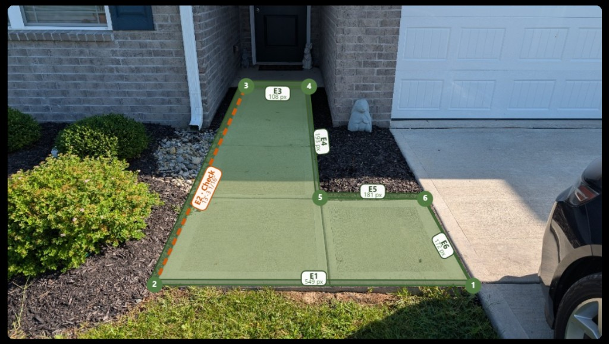

Upload a site photo, trace the outline, enter field measurements, then record area and optional volume.
Trace the outline on your photo to label each edge, then type in tape-measure lengths from the field. Angled photos distort pixel lengths — measurements are entered manually, not calculated from the image. Enter all but one edge, then recompute the final edge for field verification.

E1 is points 1→2, E2 is 2→3, and so on. Enter all but one edge, then click Compute final edge — the result is marked orange Check for field verification.
| Edge | Photo (px) | Measured length |
|---|---|---|
| E1 1→2 | 549.1 px | Example |
| E2 2→3 | 377.7 px | Check |
| E3 3→4 | 108.3 px | Example |
| E4 4→5 | 193.0 px | Example |
| E5 5→6 | 180.7 px | Example |
| E6 6→1 | 171.5 px | Example |